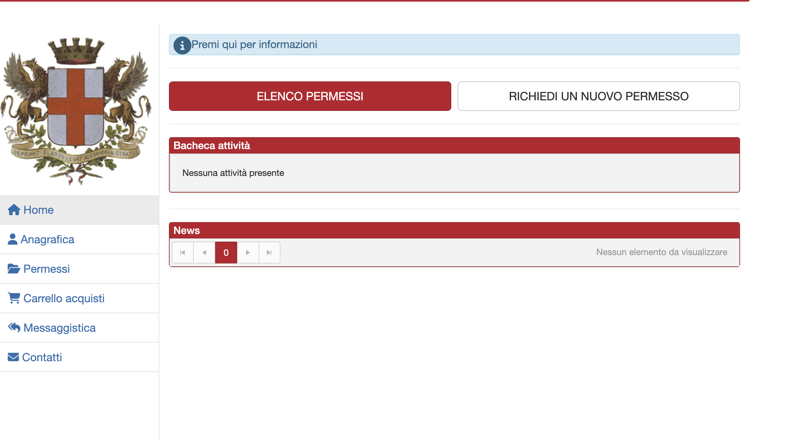
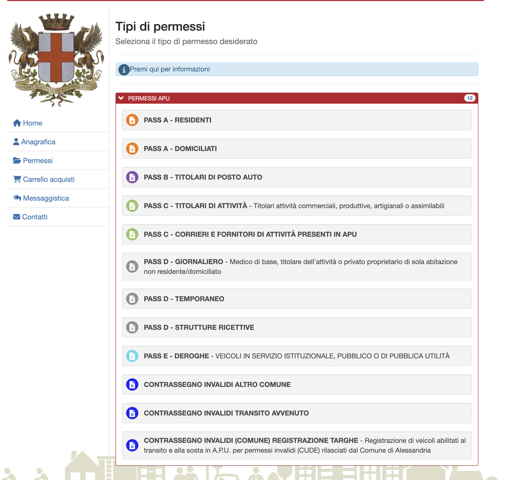
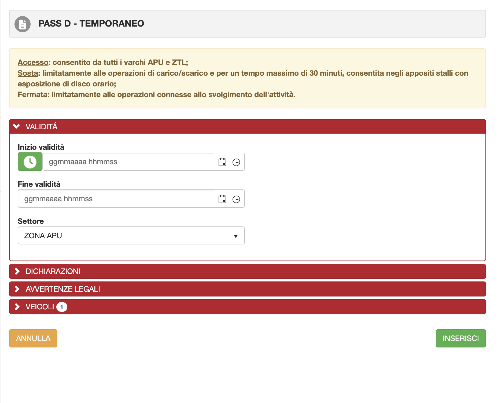
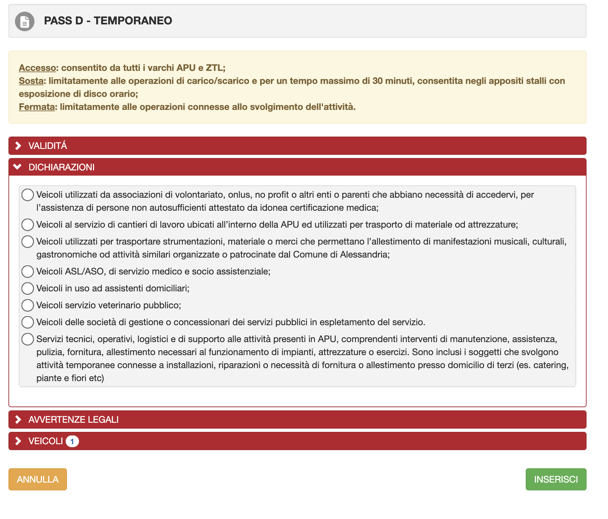
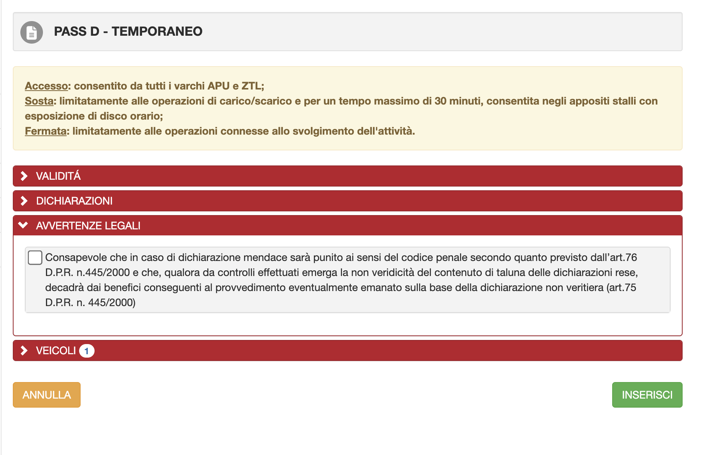
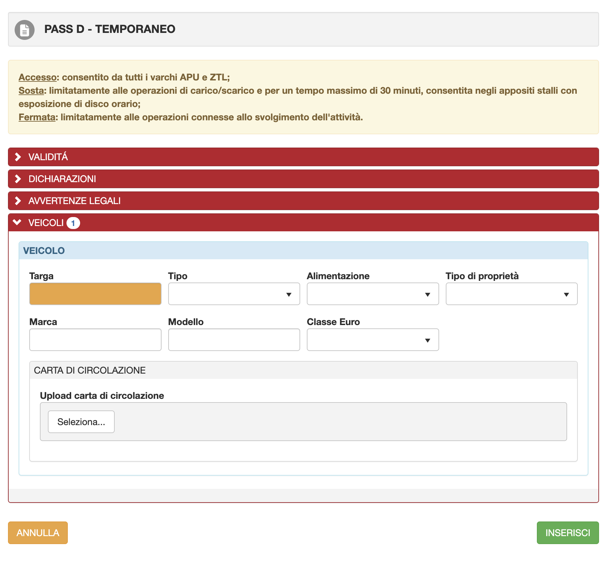

Registrazione e accesso al portale
Collegarsi al portale e accedere. Si consiglia l'accesso tramite SPID (molto più rapido). In alternativa è possibile registrarsi con email e password: verrà inviato un codice antispam all'indirizzo indicato, da inserire per completare l'accesso.

Richiedere un nuovo permesso
Dalla schermata principale cliccare sul pulsante in alto a destra:
→ RICHIEDI UN NUOVO PERMESSOScegliere il tipo di permesso
Dall'elenco dei permessi disponibili, selezionare:
→ PASS D – TEMPORANEO
Compilare la sezione VALIDITÀ
Espandere la sezione VALIDITÀ e indicare:
• Inizio validità: data e ora di inizio lavori/intervento
• Fine validità: data e ora di conclusione
• Settore: lasciare ZONA APU

Sezione DICHIARAZIONI
Espandere la sezione DICHIARAZIONI e selezionare l'ultima voce dell'elenco:

Avvertenze legali
Espandere la sezione AVVERTENZE LEGALI e spuntare la casella di presa visione dell'informativa (dichiarazione ai sensi del D.P.R. n. 445/2000).

Dati del veicolo
Espandere la sezione VEICOLI e compilare tutti i campi:
• Targa
• Tipo (dal menu a tendina)
• Alimentazione
• Tipo di proprietà
• Marca e Modello
• Classe Euro
• Allegare la carta di circolazione tramite il pulsante "Seleziona…"

Inviare la richiesta
Cliccare il pulsante verde in basso a destra:
→ INSERISCILa richiesta verrà registrata nel sistema. È possibile verificarne lo stato nella sezione "ELENCO PERMESSI" della schermata principale.